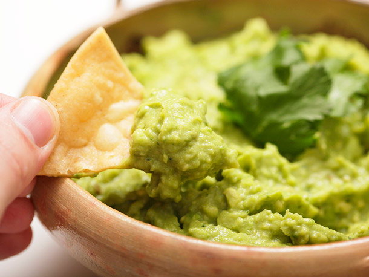

Grocery Prep
Home
Random Recipe
About the Chef
Guacamole
Another lovely food to pair with
tacos
or
salsa
.
Servings
-
4
+

Ingredients
2
avocados
1
tomatoes
0.5
onion
1
clove of garlic
1
lime
1
tbsp of salt
Instructions
Mash avocados in a large bowl
Stir in chopped tomato and onion
Mince garlic and add to bowl
Juice lime and add to bowl
Add salt
Chill in fridge for half an hour
Serve with chips